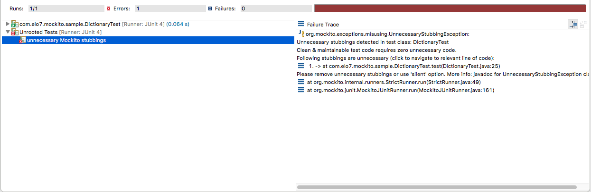

Testes de código com Mockito (2) - Novidades da nova versão
Publicado em:
@ljtfreitas
Há algum tempo, escrevi um post sobre o funcionamento e os principais recursos do Mockito. Na ocasião em que o post foi escrito, a versão 2 do framework ainda estava em beta, e, nesse tempo, não apenas foi oficialmente lançada como ocorreram vários releases subsequentes (no momento em que escrevo, a última versão é a 2.7.22).
Neste post, vou demonstrar as principais novidades e funcionalidades dessa nova versão.
Construção de mocks/proxy de objetos e classes final
A principal alteração interna da versão 2 do Mockito foi a mudança da biblioteca utilizada para construção de mocks/proxificação de objetos. Para entendermos melhor essa mudança, cabe perguntar: o que raios é um proxy?
Sem me estender muito na explicação, "proxy" é um design pattern que permite colocar um objeto "espelho" à frente de outro, que implemente a mesma interface (interface = conjunto de métodos expostos do objeto). Esse objeto "espelho" (que é a instância efetivamente usada no código, funcionando como um substituto ao objeto real) é capaz de interceptar as chamadas de método realizadas, capturando os metadados do método invocado e os argumentos enviados. O proxy é capaz de realizar tratamentos específicos para algum método em particular, ou manipular os argumentos antes de invocar o método no objeto "verdadeiro", e eventualmente até mesmo cancelar a invocação. Normalmente, isso é implementado utilizando algum recurso fornecido pela própria linguagem.
No caso do Java, proxys são um elemento fundamental em frameworks de mock. TODOS os mocks gerados pelo Mockito são proxies da classe que está sendo "mockada". No meu primeiro post, eu disse que uma definição fundamental da palavra "mock" é que se trata de um objeto gerado em tempo de execução; em Java, isso ocorre literalmente, porque um proxy é, com efeito, bytecode gerado em tempo de execução :).
A API padrão do Java permite a geração de proxies apenas para interfaces; essa limitação era contornada com o uso de algumas coisas complicadas como instrumentação de código, manipulação de bytecode e compilação em runtime. As bibliotecas que se destacam na comunidade Java para esse tipo de trabalho são o CGLIB e o javassist, utilizados em vários frameworks (como o Spring e o Hibernate).
O Mockito, desde a primeira versão, usava o CGLIB como ferramenta de construção de mocks; a partir da versão 2, a biblioteca utilizada passou a ser o ByteBuddy. As principais justificativas para a mudança são que o CGLIB, de fato, tem algumas limitações em relação ao bytecode gerado nas versões mais recentes do Java, além do ByteBuddy permitir a correção de alguns bugs de longa data do Mockito (que não eram passíveis de correções por limitações do CGLIB).
Mas, apesar de realmente ser uma mudança de alto impacto, o que isso muda para os nossos testes? A princípio, nada. Como a construção de mocks/proxies de objetos é feita internamente pelo Mockito, a maneira como os mocks são gerados não tem nenhum efeito direto sobre como nossos testes são escritos. Não obstante, essa mudança teve o efeito positivo de introduzir uma novidade, ainda que em caráter experimental: permitir mockar classes final! :)
public final class Sample {
public final String bla() {
return "bla";
}
}
public class SampleTest {
@Test
public void test() {
Sample sampleMock = Mockito.mock(Sample.class);
when(sampleMock.bla()).thenReturn("foo");
String output = sampleMock.bla();
assertEquals("foo", output);
}
}
Nas versões 1.x do Mockito, o teste acima simplesmente não funcionaria, pois seria impossível mockar a classe Sample ou mesmo o método "bla()". Isto porquê o mecanismo de proxy do CGLIB se baseia em criar, em tempo de execução, uma subclasse do objeto proxificado; como não é possível criar uma subclasse de uma classe final, ou sobrescrever um método marcado como final, não era possível implementar um teste como o do exemplo acima apenas com o Mockito. Para contornar essa limitação, uma biblioteca muito utilizada é o PowerMock (com a extensão PowerMockito), que tem como premissa "testar o não-testável", incluindo classes e métodos final como no exemplo.
Como dito antes, o mock de classes/métodos final está em fase de testes no Mockito. Para habilitá-la, você deve ativar um mecanismo semelhante ao ServiceLoader do Java:
- no seu classpath de teste, crie uma pasta chamada mockito-extensions, e dentro dela um arquivo chamado org.mockito.plugins.MockMaker (se o seu projeto utiliza Maven ou Gradle, por exemplo, o local desse arquivo seria "src/test/resources/mockito-extensions/org.mockito.plugins.MockMaker")
- o conteúdo desse arquivo deve ser uma única linha contendo: mock-maker-inline
A presença desse arquivo irá sobrescrever o MockMaker padrão utilizado pelo Mockito. Essa interface foi projetada para servir como um ponto de extensão do framework, permitindo customizar a maneira como os mocks são criados.
Com a configuração acima, o Mockito irá utilizar uma implementação especialmente projetada para usar uma combinação de subclasses e instrumentação (através de um Java Agent). Mas não se preocupe: essas complexidades de baixo nível são invisíveis para o teste, e finalmente seremos capazes de mockar nossas classes e métodos final (como o exemplo acima) sem recorrer a outras bibliotecas!
Uma maneira simplificada de utilizar esse recurso é incluir a dependência mockito-inline no seu classpath. Esse artefato irá configurar o arquivo org.mockito.plugins.MockMaker como demonstrado acima.
Para mais detalhes: Mock the unmockable
Stubs não utilizados
Um dos objetivos da nova versão do Mockito é ajudar os desenvolvedores a escrever testes melhores. Um dos pontos de atenção para manter os testes limpos e fáceis de entender é evitar código não utilizado, como configurações de mocks que não são usados na execução do programa. Vejamos um exemplo:
public class Dictionary {
private final Translator translator;
public Dictionary(Translator translator) {
this.translator = translator;
}
public String get(String word) {
return translator.translate(word);
}
}
E nosso teste:
@RunWith(MockitoJUnitRunner.class)
public class DictionaryTest {
@Mock
private Translator translator;
@InjectMocks
private Dictionary dictionary;
@Test
public void test() {
String word = "ola";
when(translator.translate(word)).thenReturn("hello");
String output = dictionary.get(word);
assertNotNull(output);
}
}
Nossa classe Dictionary, no método "get", utiliza uma instância do Translator (uma interface; a implementação do Translator não é relevante para nós) para "traduzir" a palavra enviada como parâmetro. Utilizamos o Mockito para configurar o método "translate" do Translator, para devolver a String "hello" quando o método for invocado com a palavra "word". O teste apenas verifica se a resposta do método é não-nula (um teste frágil mas atende nosso exemplo por hora). O teste acima passaria sem problema. Mas, e se nosso código fosse modificado da seguinte forma:
public class Dictionary {
private final Translator translator;
public Dictionary(Translator translator) {
this.translator = translator;
}
public String get(String word) {
return "ooops";
}
}
Perceba que o método "get" não utiliza mais o Translator. Este seria um bug que nosso teste não detectaria, por dois motivos: 1) o teste apenas confirma que a saída do método é uma String não-nula, o que continua acontecendo, e 2) o teste não verifica se o mock foi efetivamente invocado (usando o Mockito.verify). O ponto que quero ressaltar aqui é que a detecção do bug, nesse caso, depende do teste estar bem escrito. Isso pode parecer apenas senso comum, mas é muito fácil deixar passar esse tipo de detalhe, às vezes por simples desatenção momentânea, por não realizarmos completamente o ciclo do TDD (red-green-refactor), ou por desconhecimento de eventuais recursos dos frameworks envolvidos.
Por outro lado, a mudança que realizamos acima também poderia ser uma refatoração válida: digamos que nosso Dictionary realmente não irá mais utilizar o Translator e irá implementar sua lógica interna de outro modo. Em nosso teste, teríamos um mock não utilizado, com a configuração desnecessária poluindo o código. Agora, o Mockito é capaz de detectar esse tipo de situação.
Se executarmos novamente nosso DictionaryTest (após a mudança acima na classe Dictionary), teríamos como saída do teste:

O teste irá passar, mas será exibido no relatório do Junit a seguinte mensagem:
org.mockito.exceptions.misusing.UnnecessaryStubbingException:
Unnecessary stubbings detected in test class: DictionaryTest
Clean & maintainable test code requires zero unnecessary code.
Following stubbings are unnecessary (click to navigate to relevant line of code):
1. -> at com.elo7.mockito.sample.DictionaryTest.test(DictionaryTest.java:25)
Please remove unnecessary stubbings or use 'silent' option. More info: javadoc for UnnecessaryStubbingException class.
at org.mockito.internal.runners.StrictRunner.run(StrictRunner.java:49)
at org.mockito.junit.MockitoJUnitRunner.run(MockitoJUnitRunner.java:161)
at org.eclipse.jdt.internal.junit4.runner.JUnit4TestReference.run(JUnit4TestReference.java:86)
at org.eclipse.jdt.internal.junit.runner.TestExecution.run(TestExecution.java:38)
at org.eclipse.jdt.internal.junit.runner.RemoteTestRunner.runTests(RemoteTestRunner.java:459)
at org.eclipse.jdt.internal.junit.runner.RemoteTestRunner.runTests(RemoteTestRunner.java:678)
at org.eclipse.jdt.internal.junit.runner.RemoteTestRunner.run(RemoteTestRunner.java:382)
at org.eclipse.jdt.internal.junit.runner.RemoteTestRunner.main(RemoteTestRunner.java:192)
Além da mensagem bastante explicativa, o erro também inclui a linha da classe com a configuração desnecessária do mock. Reforçando: essa mensagem de "stubs não utilizados" será exibida apenas se o teste passar (essa decisão foi justificada pela equipe do Mockito tendo em mente que, se o teste falhar, exibir a mensagem de falha em conjunto com o erro relativo aos stubs poderia gerar confusão ao usuário).
Então, agora temos o recurso do Mockito para nos ajudar a limpar o código de teste (se for o caso), indicando configurações de mocks (os tais "stubs") não utilizados. Mas e se o teste ainda não estiver passando? Um problema em potencial poderia ser uma eventual configuração incorreta do mock; ou seja, o mock está sendo utilizado no código mas não da maneira como foi "stubado". Digamos, algo assim:
public class Dictionary {
private final Translator translator;
public Dictionary(Translator translator) {
this.translator = translator;
}
public String get(String word) {
return translator.translate(word);
}
}
Novamente, nosso teste:
@RunWith(MockitoJUnitRunner.class)
public class DictionaryTest {
@Mock
private Translator translator;
@InjectMocks
private Dictionary dictionary;
@Test
public void test() {
String word = "ola";
when(translator.translate(word)).thenReturn("hello");
String output = dictionary.get("oi");
assertNotNull(output);
}
}
O teste acima irá falhar. A resposta do método "get" do Dictionary será null, porque configuramos o Translator para devolver "hello" somente quando o método "translate" for invocado com o parâmetro "ola", o que não foi o caso já que enviamos a String "oi". O Mockito 2 também é capaz de nos auxiliar nessa situação, indicando que o mock foi utilizado, mas não da maneira como foi configurado. Ao rodar o teste acima, a seguinte mensagem será exibida no console:
[MockitoHint] DictionaryTest.test (see javadoc for MockitoHint):
[MockitoHint] 1. Unused... -> at com.elo7.mockito.sample.DictionaryTest.test(DictionaryTest.java:25)
[MockitoHint] ...args ok? -> at com.elo7.mockito.sample.Dictionary.get(Dictionary.java:12)
Nessa mensagem, o Mockito incluiu o ponto do código onde o mock é configurado, e o ponto onde está sendo utilizado (incorretamente ou, no mínimo, de modo diferente do que foi configurado). Esse relatório é extremamente útil, principalmente para testes mais complexos (casos em que os programadores, invariavelmente, debugam o código para encontrar o problema). Ao contrário do exemplo anterior, esse relatório de "stubs mal utilizados", se for o caso, será exibido no console (fora da saída do Junit) somente quando o teste falhar.
Caso prefira não utilizar a verificação de "stubs não utilizados/mal utilizados" (habilitado por padrão), você pode usar o Mockito no modo "silencioso":
@RunWith(MockitoJUnitRunner.Silent.class)
public class DictionaryTest {
}
Matchers do Hamcrest
Uma dor de cabeça recorrente das versões 1.x do Mockito era o conflito de versões do Hamcrest, uma biblioteca de argument matchers. Esses conflitos ocorriam porque o Mockito dependia explicitamente do Hamcrest (em função do método Matchers.argThat, que aceita como parâmetro um matcher), mas as classes principais do Hamcrest são carregadas dentro do jar do JUnit (para serem utilizadas no método Assert.assertThat), o que eventualmente gerava um pequeno e clássico "classpath hell" (já que o Mockito dependia de uma versão e o JUnit de outra).
Essa dependência foi removida e o método Matchers.argThat (que recebia como parâmetro um matcher do Hamcrest) foi depreciado. Se quiser utilizar o Hamcrest no seu projeto, você mesmo deve incluí-lo no seu classpath de testes, e utilizar a nova classe MockitoHamcrest.
A respeito da depreciação do método Matchers.argThat: na verdade, a classe Matchers foi inteiramente depreciada. Essa classe era extendida pela classe Mockito (a classe principal do framework), que na versão 2, passa a extender a classe ArgumentMatchers.
Answers.RETURNS_SELF
No meu post anterior, explorei a abstração Answer e as várias opções possíveis para configurar a resposta dos métodos de um mock. Na versão 2, o Mockito introduziu uma nova opção chamada RETURNS_SELF, que é particularmente útil para testes envolvendo Builders.
@RunWith(MockitoJUnitRunner.class)
public class SomeTest {
@Mock(answer = Answers.RETURNS_SELF)
private Builder builder;
}
O comportamento dessa resposta é: se algum método não configurado desse mock for invocado,
- Se o retorno do método for algum tipo igual à classe ou superclasse do mock, retorna a mesma instância do mock;
- Para qualquer outro caso, seguirá o mesmo comportamento da configuração padrão do Mockito (RETURNS_DEFAULTS).
Considere o exemplo abaixo, extraído da documentação:
public class HttpBuilder {
private String uri;
private List<String> headers;
public HttpBuilder() {
this.headers = new ArrayList<>();
}
public HttpBuilder withUrl(String uri) {
this.uri = uri;
return this;
}
public HttpBuilder withHeader(String header) {
this.headers.add(header);
return this;
}
public String request() {
return uri + headers.toString();
}
}
public class HttpRequestWithHeaders {
private final HttpBuilder builder;
public HttpRequestWithHeaders(HttpBuilder builder) {
this.builder = builder;
}
public String request(String uri) {
return builder.withUrl(uri)
.withHeader("Content-type: application/json")
.withHeader("Authorization: Bearer")
.request();
}
}
E o teste:
@RunWith(MockitoJUnitRunner.class)
public class SomeTest {
@Mock(answer = Answers.RETURNS_SELF)
private HttpBuilder builder;
@Test
public void test() {
HttpRequesterWithHeaders requester = new HttpRequestWithHeaders(builder);
String response = "StatusCode: 200";
//permite configurar apenas o método "request" do mock, pois cada método utilizado devolve a mesma instância
when(builder.request()).thenReturn(response);
assertThat(requester.request("URI")).isEqualTo(response);
}
}
O mock de Builders já era relativamente possível usando a answer RETURNS_DEEP_STUBS (que expliquei com maiores detalhes no post anterior). A principal diferença é que o RETURNS_DEEP_STUBS devolve um novo mock para cada método invocado, de modo que você precisaria navegar pela cadeia de invocações caso quisesse mockar um método específico. Com o RETURNS_SELF, isso não é necessário.
Como ponto de atenção, reforço o que foi explicado acima: essa answer terá efeito apenas para os métodos que devolvem o mesmo tipo da classe mockada.
Spy
A nova versão do Mockito traz uma mudança muito interessante sobre os spies (se você não os conhece, meu post anterior explica detalhadamente o que são "objetos espiões" e como utilizá-los). Agora, é possível "espiar" uma classe abstrata, o que antes não era possível. Considere o exemplo abaixo, com uma implementação do pattern Template Method. A idéia desse padrão é "definir o esqueleto de um algoritmo, delegando alguns passos para as subclasses".
public abstract class DocumentGenerator {
public Document generate() {
// esse método define a código-base da geração de documentos, usando os métodos implementados nas subclasses
StringBuilder builder = new StringBuilder();
builder.append(header())
.append(body())
.append(footer());
return new Document(builder.toString());
}
protected abstract String header();
protected abstract String body();
protected abstract String footer();
}
public class HtmlDocumentGenerator extends DocumentGenerator {
@Override
protected String header() {
// Gera o cabeçalho do documento no formato HTML
return null;
}
@Override
protected String body() {
// Gera o corpo do documento no formato HTML
return null;
}
@Override
protected String footer() {
// Gera o rodapé do documento no formato HTML
return null;
}
}
public class XmlDocumentGenerator extends DocumentGenerator {
@Override
protected String header() {
// Gera o cabeçalho do documento no formato XML
return null;
}
@Override
protected String body() {
// Gera o cabeçalho do documento no formato XML
return null;
}
@Override
protected String footer() {
// Gera o cabeçalho do documento no formato XML
return null;
}
}
Suponhamos que desejamos testar o método "generate" da classe DocumentGenerator, pois esee método representa a geração do documento completa (de qualquer tipo). Uma idéia válida seria usarmos um partial mock do DocumentGenerator, mockando os métodos auxiliares do algoritmo (no caso, "header()", "body()" e "footer()"). Poderíamos utilizar o @Spy do Mockito, que nos permitir usar a implementação real do método "generate" e configurarmos os outros:
@RunWith(MockitoJUnitRunner.class)
public class DocumentGeneratorTest {
@Spy
private DocumentGenerator documentGenerator;
@Test
public void test() {
doReturn("[header]").when(documentGenerator).header();
doReturn("[body]").when(documentGenerator).body();
doReturn("[footer]").when(documentGenerator).footer();
Document document = documentGenerator.generate();
assertEquals("[header][body][footer]", document.toString());
}
}
No Mockito 1.x, essa configuração não vai funcionar, porque não é possível criar um spy a partir de uma classe abstrata. A "solução" seria criar um "objeto stub", que extende DocumentGenerator, para utilizarmos no teste:
public class DocumentGeneratorTest {
private final DocumentGenerator documentGenerator = new DummyDocumentGenerator();
@Test
public void test() {
Document document = documentGenerator.generate();
assertEquals("[header][body][footer]", document.toString());
}
private class DummyDocumentGenerator extends DocumentGenerator {
@Override
protected String header() {
return "[header]";
}
@Override
protected String body() {
return "[body]";
}
@Override
protected String footer() {
return "[footer]";
}
}
}
No Mockito 2.x, podemos criar um spy a partir de uma classe abstrata, e o teste inicial (exemplo anterior) rodaria sem problemas. No exemplo, a criação foi feita com a anotação @Spy; nesse caso, a única restrição é que a classe abstrata deve ter um construtor padrão (sem argumentos). Se não for o caso, você ainda pode utilizar a API programática do Mockito:
public class SomeAbstractType {
private final String arg;
private final int otherArg;
public SomeAbstractType(String arg, int otherArg) {
this.arg = arg;
this.otherArg = otherArg;
}
}
public class SomeAbstractTypeTest {
@Test
public void anyTest() {
SomeAbstractType spy = mock(SomeAbstractType.class, withSettings().useConstructor("arg1", 123).defaultAnswer(Answers.CALLS_REAL_METHODS));
}
}
Verificação de métodos
A verificação de métodos dos mocks (realizada pelo método Mockito.verify) consiste em confirmar que os mocks foram invocados adequadamente, e é extremamente importante em alguns cenários de teste (em outros, nem tanto). Uma melhoria introduzida na versão 2 do Mockito é a possibilidade de verificação "lazy". Abaixo, um exemplo dessa funcionalidade:
public class User {
private final String name;
private final String email;
public User(String name, String email) {
this.name = name;
this.email = email;
}
public String getName() {
return name;
}
public String getEmail() {
return email;
}
}
public interface UserRepository {
User save(User user);
}
public interface UserEmailSender {
void sendTo(User user);
}
public class UserService {
private final UserRepository userRepository;
private final UserEmailSender userEmailSender;
public UserService(UserRepository userRepository, UserEmailSender userEmailSender) {
this.userRepository = userRepository;
this.userEmailSender = userEmailSender;
}
public User persist(User user) {
/* aqui vamos usar o UserRepository para persistir o usuário na nossa base de dados,
e o UserEmailSender para enviar um e-mail de boas vindas.
Mas o código ainda não está implementado! */
return null;
}
}
Nosso teste:
@RunWith(MockitoJUnitRunner.class)
public class UserServiceTest {
@Mock
private UserRepository userRepository;
@Mock
private UserEmailSender userEmailSender;
@InjectMocks
private UserService userService;
@Test
public void shouldCreateNewUser() {
User user = new User("Tiago de Freitas Lima", "tiago.lima@elo7.com");
User newUser = new User(1l, "Tiago de Freitas Lima", "tiago.lima@elo7.com");
when(userRepository.save(user)).thenReturn(newUser);
User persistedUser = userService.persist(user);
verify(userRepository).save(user);
verify(userEmailSender).sendTo(newUser);
}
}
Implementamos nosso teste pensando no comportamento esperado do método UserService.persist; enviamos um usuário, queremos que ele seja persistido no repositório de dados e que seja enviado um email ao usuário criado. O teste irá falhar, pois o código ainda não foi implementado. E irá falhar na primeira verificação:
public class UserServiceTest {
//...código omitido
@Test
public void shouldCreateNewUser() {
//...código omitido
verify(userRepository).save(user); // falha aqui - o método do mock não foi invocado
verify(userEmailSender).sendTo(newUser); // essa verificação não é executada
}
}
O erro no JUnit, indicando a verificação do Mockito que falhou:
Wanted but not invoked:
userRepository.save(
com.elo7.mockito.sample.User@222545dc
);
-> at com.elo7.mockito.sample.UserServiceTest.shouldCreateNewUser(UserServiceTest.java:37)
Actually, there were zero interactions with this mock.
Ao implementarmos um teste dessa forma (test-first), seria útil visualizarmos todas as interações de mocks que ainda não estão implementadas no código. No exemplo acima, seria de muito valor que o Mockito nos informasse, no seu relatório de erro, que tanto o UserRepository quanto o UserEmailSender não estão sendo utilizados. No Mockito 2, isso é possível usando uma @Rule especial chamada VerificationCollector:
@RunWith(MockitoJUnitRunner.class)
public class UserServiceTest {
@Mock
private UserRepository userRepository;
@Mock
private UserEmailSender userEmailSender;
@InjectMocks
private UserService userService;
@Rule
public VerificationCollector collector = MockitoJUnit.collector(); //basta declarar a rule
@Test
public void shouldCreateNewUser() {
User user = new User("Tiago de Freitas Lima", "tiago.lima@elo7.com");
User newUser = new User(1l, "Tiago de Freitas Lima", "tiago.lima@elo7.com");
when(userRepository.save(user)).thenReturn(newUser);
userService.persist(user);
verify(userRepository).save(user); //essa verificação irá falhar, mas a execução do teste vai continuar
verify(userEmailSender).sendTo(newUser); //essa verificação também falhará, mas novamente a execução não será interrompida
}
}
Agora, na saída no JUnit, o erro lançado pelo Mockito irá indicar os dois mocks não utilizados:
org.mockito.exceptions.base.MockitoAssertionError: There were multiple verification failures:
1. Wanted but not invoked:
userRepository.save(
com.elo7.mockito.sample.User@564fabc8
);
-> at com.elo7.mockito.sample.UserServiceTest.shouldCreateNewUser(UserServiceTest.java:39)
Actually, there were zero interactions with this mock.
2. Wanted but not invoked:
userEmailSender.sendTo(
com.elo7.mockito.sample.User@436813f3
);
-> at com.elo7.mockito.sample.UserServiceTest.shouldCreateNewUser(UserServiceTest.java:40)
Actually, there were zero interactions with this mock.
Um detalhe importante do exemplo acima: para fins de exemplo, não inclui nenhum assert. Supondo que eu fizesse alguma asserção e ela falhasse (por exemplo, assertNotNull no retorno do método), os eventuais problemas de verificação não seriam exibidos, apenas a falha do teste. Então, os erros da verificação "lazy", gerados pelo Mockito após o teste, serão exibidos apenas se não ocorrer nenhum outro problema.
E mais mudanças...
-
A nova versão é compatível apenas com Java 6 ou superior (a versão 1.x é compatível com Java 5)
-
Os matchers anyX() (anyString(), anyInt(), etc) e any(AlgumTipo.class) passam a rejeitar valores nulos. Exemplos:
public interface Translator {
String translate(String word);
}
@RunWith(MockitoJUnitRunner.class)
public class SomeTest {
@Mock
private Translator translator;
@Test
public void test() {
translator.translate(null);
verify(translator).translate(anyString()); // falha -> null não é "qualquer String"
verify(translator).translate(any()); // sucesso -> null é "qualquer"
}
}
-
O método getArgumentAt, da classe InvocationOnMock foi renomeado e teve sua assinatura alterada para inferir o tipo de retorno de forma implícita (ao invés de receber um argumento do tipo Class). Essa mudança é muito importante caso você implemente respostas customizadas. Também foram criadas novas Answers para métodos com múltiplos argumentos.
-
Para fins de depuração, caso você queira visualizar todas as invocações do seu mock, você pode utilizar o novo método MockingDetails.printInvocations:
@RunWith(MockitoJUnitRunner.class)
public class SomeTest {
@Mock
private Translator translator;
@Test
public void test() {
translator.translate("ola");
System.out.println(Mockito.mockingDetails(translator).printInvocations());
}
}
A saída no console:
[Mockito] Interactions of: translator
1. translator.translate("ola");
-> at com.elo7.mockito.sample.SomeTest.test(SomeTest.java:17)
- Se você está utilizando o Mockito no Android, a versão 2 traz algumas customizações de geração de bytecode específicas para a JVM do Android. Para utilizar, basta importar o artefato mockito-android.
Conclusão
O Mockito é um dos frameworks de mocks mais utilizados na linguagem Java, muito devido à simplicidade na sua utilização e grande número de recursos. A versão 2.x manteve essa linha de implementação, além de trazer novas e interessantes funcionalidades para ajudar os desenvolvedores a escrever mais e melhores testes. Nesse post, cobri as principais mudanças e novidades da nova versão. Espero que tenha gostado! Em caso de dúvidas ou qualquer outra coisa, sinta-se à vontade para usar a caixa de comentários!